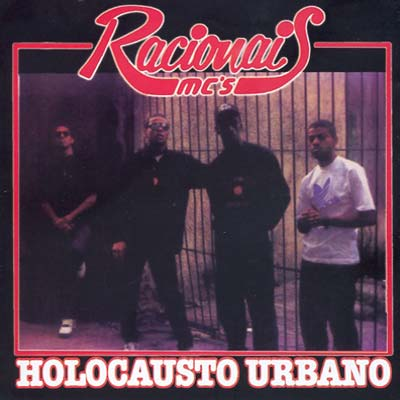
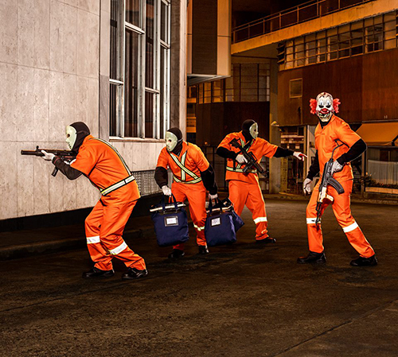

Pedro Paulo Soares Pereira nasceu em São Paulo no dia 22 de abril de 1970, mais conhecido como Mano Brown, é um rapper brasileiro, produtor e vocalista dos Racionais MC's. É autor de canções como "Vida Loka I", "Vida Loka II", "Negro Drama" (com Edi Rock), "A Vida é Desafio", "Jesus Chorou", "Da Ponte pra Cá", "Capítulo 4, Versículo 3", "Tô Ouvindo Alguém Me Chamar", "Diário de um Detento", "Fórmula Mágica da Paz", "Homem na Estrada", "Fim de Semana no Parque" (com Edi Rock), "Mano Na Porta do Bar", "Negro Limitado" (com Edi Rock) "Pânico na Zona Sul" e "Artigo 157".
REFERÊNCIA NO RAP NACIONAL
Os Racionais MC’s, mesmo 33 anos depois de sua criação, seguem sendo a principal referência do rap nacional, algo que desafia a lógica do apagamento natural das velhas expressões conforme as novas ganham espaço. São poucas que resistem à oxidação do tempo no rap. Além de Racionais, Thaíde e DJ Hum estão na mesma posição.
Ainda que desarticulados, e com a atualização de frases em algumas de suas músicas que traziam possíveis leituras misóginas e machistas, são eles o primeiro e ainda único fenômeno no que se chama rap nacional, a vertente que, segundo Gilberto Gil, herdou da MPB dos anos de 1970 o poder da contestação social urbana.
Uma visita do Estadão a uma reserva indígena dos guarani-kaiowá em Dourados, em Mato Grosso do Sul, em 2014, testou a longevidade do discurso dos Racionais. Pela aldeia, garotos de 16 ou 17 anos caminhavam com camisetas que traziam o rosto de Mano Brown e ouviam músicas dos Racionais em celulares como se fossem radinhos de pilha. Ao ser perguntado sobre o motivo de tantos meninos gostarem de rap na região, Kevin, o cantor do grupo Brô MCs, só de raps cantados em guarani, disse: "Eu não sabia que poderia protestar contra as coisas ruins da aldeia até ouvir os Racionais. Mais do que mostrar a eles uma música que parecia ter sido feita sob medida para sua realidade, os rappers de São Paulo os ensinaram a brigar por direitos".
Fonte: Exame
HISTÓRIA DO GRUPO
Nascido no final da década de 1980, o nome do grupo foi inspirado no disco Tim Maia Racional de Tim Maia. A primeira gravação do grupo foi feita em 1988, quando o selo Zimbabwe Records lançou a coletânea Consciência Black, Vol. I. Neste LP, apareceram os dois primeiros sucessos do grupo: "Pânico na Zona Sul" e "Tempos Difíceis". Ambas canções apareceriam dois anos depois em Holocausto Urbano, primeiro disco oficial do grupo e cujas letras denunciam o racismo e a miséria na periferia de São Paulo, marcada pela violência e pelo crime. Após esse álbum, os Racionais MC's tornaram-se bem conhecidos dentro da cena rap da periferia paulistana e da Grande São Paulo. Essa popularização fez com que os integrantes dos Racionais MC's passassem a desenvolver trabalhos especialmente voltados para comunidades pobres, dentre os quais um projeto criado pela Secretaria Municipal de Educação de São Paulo, em que o conjunto realizou palestras em escolas sobre drogas, racismo, violência policial entre outros temas. Também participariam nos anos seguintes de diversos concertos filantrópicos em benefício de HIV positivos, campanhas de agasalho e contra a fome, além de atuarem em protestos como o aniversário da Abolição dos Escravos no Brasil.
Em 1991, os Racionais MC's abriram o show do pioneiro Public Enemy, um dos mais famosos grupos de hip hop americano, no Ginásio do Ibirapuera, em São Paulo. No final de 1992, foi lançado o segundo LP do grupo, Escolha o seu Caminho. No ano seguinte, o grupo participou do projeto "Música Negra em Ação", realizado no Teatro das Nações em São Paulo, e gravou o disco Raio X Brasil, terceiro disco do conjunto, lançado em uma festa na quadra da escola de samba Rosas de Ouro para um público estimado de 10 mil pessoas. Canções deste disco como "Fim de Semana no Parque" e "Homem na Estrada" (ambas de Mano Brown) fizeram grande sucesso em bailes de rap e nas rádios do gênero em todo o país.
Principal atração do Rap no Vale, um concerto de rap realizado no final de 1994, no Vale do Anhangabaú (centro de São Paulo), e que terminou em confusão e quebra-quebra, os membros do grupo foram presos pela polícia sob acusação de incitação à violência - a violência policial é um tema frequente nas letras do grupo. Ainda naquele ano, a gravadora Zimbabwe lançou a coletânea Racionais MC's.
No final de 1997, foi lançado o disco Sobrevivendo no Inferno, pelo selo Cosa Nostra (do próprio grupo), que vendeu cerca de 500 mil cópias. Dentre os grandes sucessos deste álbum estão "Diário de um Detento", "Fórmula Mágica da Paz", "Capítulo 4, Versículo 3" e "Mágico de Oz". Com esse disco, os Racionais MC's deixaram de ser um fenômeno na periferia paulistana para fazer sucesso entre outros grupos sociais. Apesar disso, o grupo adotou uma postura antimídia. Um exemplo notório foi a cerimônia de premiação do Video Music Brasil, da MTV Brasil, quando a emissora teve muita dificuldade para levar o grupo para a premiação e Mano Brown ressaltou que a mãe havia lavado muita roupa pra '"playboy" pra fazê-lo chegar até ali.
2002, o grupo lançou Nada Como um Dia Após o Outro Dia, disco duplo que, assim como seu antecessor, foi bem recebido pela crítica. Entre os maiores sucessos estão "Vida Loka I", "Vida Loka II", "Negro Drama", "Jesus Chorou" e "Estilo Cachorro". Quatro anos depois, o grupo lançou 1000 Trutas, 1000 Tretas, seu primeiro DVD. Em 5 de maio de 2007, os Racionais fizeram um show na Virada Cultural de São Paulo, mas os fãs da banda entraram em confronto com os policiais, transformando o evento em um campo de batalha. Em 2012, o grupo lançou a música "Mil Faces de um Homem Leal", composta para o documentário sobre a vida do guerrilheiro Carlos Marighella. Ainda naquele ano, eles participaram do MTV Video Music Brasil, tendo feito o show de encerramento do evento. Comemorando 25 anos de carreira, o grupo realizou uma turnê por várias cidades do Brasil. A turnê foi produzida pela produtora oficial do grupo, a Boogie Naipe, e foi premiada como a melhor do ano pelo SuperJúri do Prêmio Multishow de 2014. O grupo anunciou no último dia 23 de outubro de 2014 o lançamento de um novo álbum de estúdio para o dia 20 de dezembro de 2014.
25 de novembro de 2014, o grupo lançou o sexto álbum de estúdio Cores & Valores, o primeiro com músicas inéditas em 12 anos, e também o primeiro a ter influência do gênero trap.
Em 2018, a banda ganhou destaque por ter seu álbum Sobrevivendo No Inferno (1997) selecionado como material para o vestibular de 2020 da Unicamp. Segundo a instituição, “diferentes gêneros e extensões, de autores das literaturas brasileira e portuguesa”. Em 2019 o grupo comemorou 30 anos de carreira com vários shows pelo Brasil, a turnê encerrou em S.Paulo com 3 shows lotados no Citibank Hall.
Em 2022, os Racionais participaram pela primeira vez do festival "Rock in Rio", um dos maiores festivais de música do mundo. O grupo se apresentou no sábado, dia 3 de setembro, no Palco Sunset. O show teve início com projeções do filme "The Warriors", conhecido no Brasil com o título "Os Selvagens da Noite", clássico dos anos 1980, o filme procura refletir sobre as origens da violência na sociedade. A projeção continuou com imagens do grupo no metrô de São Paulo, quando o trem chega na estação Capão Redondo, os Racionais "descem" do trem da projeção e entram no palco do Rock in Rio. Pelo fato de o grupo sempre buscar fazer críticas e reflexões sociais, pode-se interpretar o paralelo feito entre o filme e as imagens em São Paulo "onde há um acordo para que gangues de diversas partes de Nova York se reúnam sem armas ou atos violentos, nesta noite a plateia representava as diferentes "tribos" do país".
Fonte: Wikipédia
DISCOGRAFIA

Holocausto Urbano
1990

Sobrevivendo no Inferno
1997

Nada Como um dia Após o Outro Dia
2002
Racionais Ao Vivo
2002
1000 Trutas, 1000 Tretas
2006

Cores & Valores
2014
Racionais'MCs 25
2014
Mil Faces de Um Homem Leal
2017
INTEGRANTES
Mano Brown
Ice Blue
Paulo Eduardo Salvador, mais conhecido como Ice Blue, nasceu no dia 16 de março de 1971, apresenta o programa "Balanço Rap" na estação de rádio 105 FM junto com o companheiro de grupo KL Jay. Seu apelido vem de "Nego Blue", música de Jorge Ben Jor. Mano Brown diz que é porque "ele andava sempre arrumadinho". Atualmente está trabalhando no seu primeiro disco solo.
Edi Rock
Edivaldo Pereira Alves nasceu em São Paulo no dia 20 de setembro de 1970, mais conhecido pelo seu nome artístico, Edi Rock é um rapper e compositor brasileiro.
É de autoria de Edi Rock as canções "Mágico de Oz","Tempos Difíceis" e "Rapaz Comum", além de várias outras as quais fez em parceria com Mano Brown e Ice Blue. Além disso, compôs uma canção em parceria com a banda inglesa Asian Dub Foundation na faixa 19 Rebellions sobre as rebeliões orquestradas pelo Primeiro Comando da Capital (PCC) em 2001 e seu exemplo como ação organizada contra o estado e o status quo.[38] Em 2012, Edi Rock lançou a canção "That's My Way" junto com Seu Jorge, a qual foi indicada para o Prêmio VMB como "Melhor Videoclipe", porém perdeu para "Mil Faces de um Homem Leal", do próprio Racionais MC's.[39] Edi Rock já gravou 3 cds solos, o último foi pela Som Livre.
KL Jay
Kleber Geraldo Lelis Simões, mais conhecido por seu nome artístico KL Jay, nasceu em São Paulo no dia 10 de agosto de 1969 em São Paulo. KL Jay é o DJ dos Racionais MC's. Cabe a ele a criação das bases, que são aquelas batidas que acompanham o lírico, dando o ritmo certo para esses serem cantados. Paralelo ao grupo, KL Jay já gravou alguns álbuns solos e tem um selo musical chamado KL Música.
Fonte: Wikipédia
ENTREVISTA DE MANO BROWN AO RODA VIVA
"Quando eu li o Malcom X eu me vi, vi tudo. O mesmo mundo, o universo que eu vivia estava ali naquele livro."
MANO A MANO
O Mano a mano é um programa de entrevistas que começou em 2021 e é comandado por Mano Brown. Entre os convidados da temporada de estreia estão nomes como os músicos Karol Conká e Djonga, os atores Wagner Moura, Lázaro Ramos e Taís Araújo, o Dr. Drauzio Varella e o ex-presidente Luiz Inácio Lula da Silva. O programa conquistou público e relevância se tornando o segundo podcast mais ouvido do Brasil no Spotify em 2021. A entrevista com Lula atingiu a marca de episódio mais escutado da plataforma.
"Meu sucesso se deve a toda a equipe que está me assessorando", conta Brown. Para o artista esse trabalho vai muito além da imagem que criou na música. "Não é a carreira do Brown, claro que é também. Porém, é algo muito mais amplo que isso", pontua. "Aqui, eu não sou o Brown do rap, Racionais e imaginário. Apesar da voz associar, trato como duas coisas distintas", completa.
Fonte: Correio Braziliense